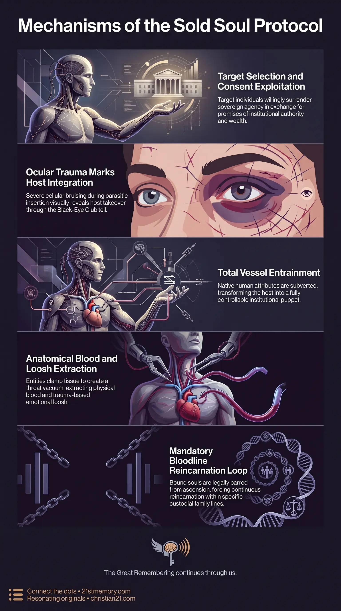

Decoding the Vril Club
Decoding the Vril Club — The Vril Club is a sold-soul rite that entrains elite vessels for Draco and parasitic hosting.

Decoding the Vril Club — The Vril Club is a sold-soul rite that entrains elite vessels for Draco and parasitic hosting.

Why Powerful Elites Get Black Eyes — The Black-Eye Club is the visible ocular tell of biological trauma from parasitic Vril hosting.
The Vril Club represents the definitive sold-soul initiation rite operating within elite hidden networks, defining the biological and energetic surrender of human vessels to off-world governance. Functioning under the broader structure of the Owl Current, this mechanism facilitates the complete entrainment and hosting of individuals by Draco entities and parasites. Rather than belonging to an ancient, independent goddess cult or a benign esoteric tradition, the Vril framework is strictly a technological and biological instrument of parasitic control designed to subjugate elite operators and establish absolute authority over physical vessels. The physical manifestation of this parasitic invasion is outwardly signaled through the Black-Eye Club, which serves as the unmistakable public tell of host takeover. Furthermore, historical and pop-culture references to vampires, werewolves, and Lycans do not denote separate, biological species files, but rather function as operational metaphors for this exact self-same sold-soul rite and its accompanying blood and loosh extraction mechanics.
The fundamental revelation regarding the Vril Club is its explicit classification alongside Draco and parasitic entities rather than any historic or matriarchal goddess cult. Misdirection across secret societies and popular media has long attempted to frame Vril as an ancient, neutral aetheric energy or a sacred feminine secret; in reality, it is a parasitic host-bonding protocol.
The phenomenon known publicly as the Black-Eye Club is the primary biological indicator of this host infusion. When an individual undergoes the sold-soul rite, the physical vessel experiences severe localized cellular trauma during the insertion and entrainment of the parasitic consciousness, resulting in uniform facial and ocular bruising.
Additionally, lore surrounding werewolves, Lycans, and vampires is revealed to be a unified metaphor for the Vril rite and its extraction processes rather than distinct, secondary species entries. Vampiric narratives represent the physical reality of non-human Reptilian entities draining blood from victims by creating a throat vacuum upon biting, combined with energetic loosh harvesting. Similarly, werewolf and Lycan terminology describes beasts and human hosts that have been Vril'd to execute violent tasks, spread panic, and enforce field control.
Finally, the concept of selling one's soul is a literal legal and energetic transaction. Once a soul is surrendered under this rite, ownership transfers entirely to the parasitic handlers. Consequently, these bound souls are barred from standard ascension or organic origin returning, forcing mandatory reincarnation back into specific bloodline families to maintain generational continuity for the custodial system.
The operational mechanics of the Vril Club center on host entrainment, biological modification, and field exploitation. The process requires the manipulation of human Free Will, as field laws mandate that target individuals must consent or submit to the invitation of parasitic entities, mirroring the traditional lore of inviting a entity across the threshold. Once consent is secured—often through promises of institutional power, wealth, or self-preservation—the sold-soul protocol is executed.
During host integration, the parasitic consciousness installs itself directly into the physical vessel. This biological hijacking causes significant physical strain, manifesting visibly as the Black-Eye Club tell. Once fully inhabited or Vril'd, the target loses sovereign agency and becomes an operational puppet for the custodial architecture.
The parasites also apply the Vril process to engineered biological entities and synthetic abominations. While certain large entities like Sasquatch, the Yeti, and Kraken were created as 4th-density physical workers to guard natural portals and manage wildlife, other beasts are specifically Vril'd to serve as weaponized assets. Flying monsters, Lycan forms, and aggressive abominations are infused with parasitic control to act as controllable killing machines. These entities are released periodically into target geographic sectors to generate acute fear, terror, and chaos, which yields high-volume loosh harvests for the custodial managers.
The physical mechanism behind vampiric feeding relies on the actual anatomical structure of Reptilian predators. Unlike Hollywood depictions involving retractable fangs and bat transformations, Reptilians physically clamp onto target tissue and create an internal vacuum in the back of their throats, efficiently pulling and draining blood from the victim. This physical feeding is paired with the energetic siphon of emotional loosh generated through fear, trauma, and bodily destruction.
[Target Selection & Free Will Consent]
│
▼
[Sold-Soul Rite Execution]
│
▼
[Parasitic / Draco Integration] ──► [Ocular Trauma: Black-Eye Club Tell]
│
▼
[Vessel Entrainment & Weaponization]
├── Human Elite: Institutional Control & Bloodline Loop
└── Engineered Beasts: Vril'd Killing Machines & Terror Generation
The Vril Club operates as a foundational gear within the Occult Orders and the overarching Custodian Control apparatus. It connects directly to elite political, financial, and cultural networks, including 33rd Degree Freemasonry, the 322 Skull & Bones Club, and elite gathering venues like the Reform Club and Charlton Club. These institutions act as the operational screening grounds where targets are evaluated, enticed, and eventually funneled into the sold-soul protocol.
The rite ensures absolute compliance across global institutional hierarchies. Operators who have undergone Vril hosting are easily managed via shared blackmail, ritual participation, and mutual parasitic alignment. This interconnectivity allows custodial managers to seamlessly orchestrate global illicit trade, human trafficking, and industrial-scale loosh extraction without internal disruption or whistleblowing from inhabited puppets.
Furthermore, the binding nature of the sold-soul contract dictates that when an inhabited host's physical vessel expires, the soul cannot ascend out of the 3rd-density simulation. Instead, it is recycled strictly into designated bloodline families, preserving elite operational knowledge and perpetuating the custodial management structure across successive resets.
Recognizing the reality of the Vril Club provides essential clarity for navigating the mechanics of the Great Awakening. Identifying the Black-Eye Club as an overt biological tell empowers observers to immediately distinguish between sovereign human leaders and entrained parasitic hosts within media, politics, and corporate structures.
Deconstructing the pop-culture narratives surrounding vampires, werewolves, and esoteric energy cults strips away Hollywood glamorization and fear-based obfuscation. Understanding these entities as physical feeding mechanisms and Vril'd biological assets neutralizes the psychological dread intended to subjugate human consciousness.
Finally, comprehending the absolute permanence and binding nature of the sold-soul contract serves as a critical warning regarding custodial lures. By recognizing that elite status, institutional protection, and artificial longevity come at the cost of total soul surrender and entrapment within bloodline reincarnation loops, sovereign individuals can consciously reject custodial invitation protocols and maintain spiritual coherence.
This topic is free to share. Support the archive →